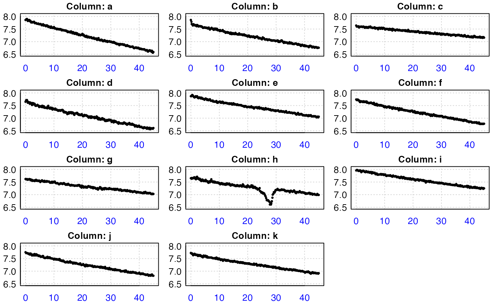
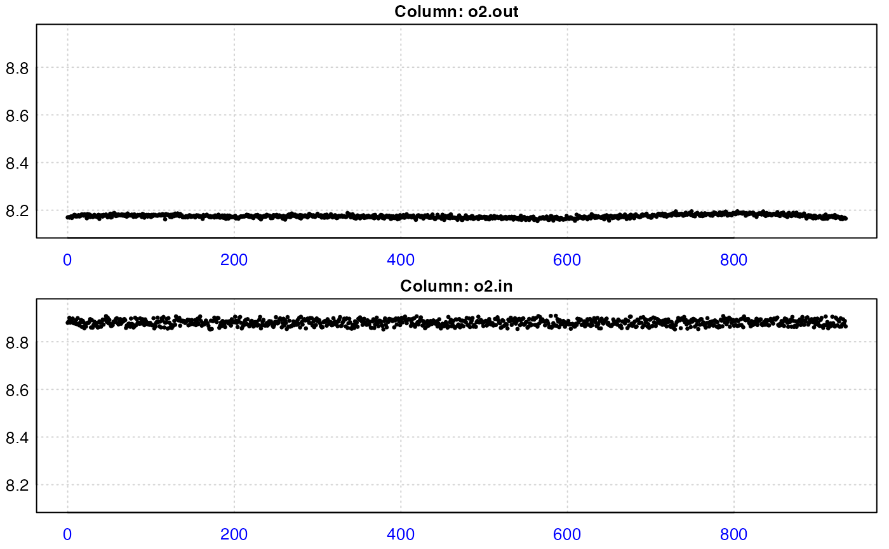

inspect() scans and subsets a data.frame object for errors that may affect
the use of various functions in respR. By default, the function scans only
the first 2 columns of a data frame and assumes that the first column is time
data. A plot of the data is also produced, including a rolling regression
plot using a width of floor(0.1 * nrow([data frame]) for a quick visual
inspection of the rate pattern (or stability) of the data. Note that rates
for oxygen uptake are returned as negative and plotted on a reverse axis;
higher oxygen uptake rates are higher on the rate plot (more negative).
inspect(df, time = NULL, oxygen = NULL, plot = TRUE)
Arguments
| df | data.frame object. Accepts any object of class |
|---|---|
| time | numeric vector. Defaults to NULL. This specifies the column number(s) of the time data to subset. |
| oxygen | numeric vector. Defaults to NULL. This specifies the column number(s) of the oxygen data to subset. |
| plot | logical. Defaults to TRUE. Plots the data for quick visual diagnosis. Works only when the subset dataframe contains exactly 2 columns. |
Value
A list object of class inspect.
Details
Time columns are checked for NA/NaN values, sequential time, duplicate time
and evenly-spaced time data. Oxygen columns are simply checked for NA/NaN
data. Once data checks are complete, the function produces a list object
which may be directly loaded into calc_rate(), calc_rate.bg(),
calc_rate.ft(), and auto_rate() for further analyses.
If you wish to scan more than two columns, you can do so by specifying the
time and oxygen arguments to select specific columns of a large data
frame. However, the function will not produce a plot. Thus, you may inspect
flowthrough respirometry data, which usually contains oxygen values for
inflow and outflow, by specifying a vector of column numbers, e.g. oxygen = c(2,3).
Failed Checks
It should be noted most of these checks are for exploratory purposes only; they help diagnose potential issues with the data. For instance, very long experiments could have had sensor dropouts the user is completely unaware of. Other issues are not issues at all - for instance, an uneven time warning can result from using decimalised minutes, which is a completely valid time metric.
If some of these checks fail, it should generally not hinder analysis of the data. respR has been coded to rely on linear regression on exact data values, and not make assumptions about data spacing. Therefore issues such as missing or NA/NaN values, duplicate values, or uneven time spacing should not cause any erroneous results, as long as they do not occur over large regions of the data. The only major potential issue is if time data are not sequential. This could cause unknown results and incorrect rates to be returned.
Examples
#>#> #> # inspect # ----------------------------- #> Time Oxygen #> NA/NAN pass pass #> sequential pass - #> duplicated pass - #> evenly-spaced pass -#> Warning: Time values are not evenly-spaced.#>#> #> # inspect # ----------------------------- #> time.min a b c d e f g h i j k #> NA/NAN pass pass pass pass pass pass pass pass pass pass pass pass #> sequential pass - - - - - - - - - - - #> duplicated pass - - - - - - - - - - - #> evenly-spaced WARN - - - - - - - - - - - #> l m n o p b1 b2 #> NA/NAN pass pass pass pass pass pass pass #> sequential - - - - - - - #> duplicated - - - - - - - #> evenly-spaced - - - - - - -#> Warning: Time values are not evenly-spaced.#> #> # inspect # ----------------------------- #> time.min c #> NA/NAN pass pass #> sequential pass - #> duplicated pass - #> evenly-spaced WARN - #> Uneven time data locations (first 20 shown) in column: time.min c #> [1] 1 2 3 4 5 6 7 8 9 10 11 12 13 14 15 16 17 18 19 20#> Warning: Time values are not evenly-spaced.#>print(x)#> #> # inspect # ----------------------------- #> time.min a b c d e f g h i j k #> NA/NAN pass pass pass pass pass pass pass pass pass pass pass pass #> sequential pass - - - - - - - - - - - #> duplicated pass - - - - - - - - - - - #> evenly-spaced WARN - - - - - - - - - - -x$list$time.min # check position of errors in data frame#> $`NA/NAN` #> integer(0) #> #> $sequential #> integer(0) #> #> $duplicated #> integer(0) #> #> $`evenly-spaced` #> [1] 1 2 3 4 5 6 7 8 9 10 11 12 13 14 15 16 17 18 #> [19] 19 20 21 22 23 24 25 26 27 28 29 30 31 32 33 34 35 36 #> [37] 37 38 39 40 41 42 43 44 45 46 47 48 50 53 56 59 62 65 #> [55] 68 71 74 77 80 83 86 89 92 95 98 101 104 107 110 113 116 119 #> [73] 122 125 128 131 134 137 140 143 146 149 152 155 158 161 164 167 170 173 #> [91] 176 179 182 185 188 191 193 194 195 196 197 198 199 200 201 202 203 204 #> [109] 205 206 207 208 209 210 211 212 213 214 215 216 217 218 219 220 221 222 #> [127] 223 224 225 226 227 228 229 230 231 232 233 234 235 236 237 238 239 240 #> [145] 241 242 243 244 245 246 247 248 249 250 251 252 253 254 255 256 257 258 #> [163] 259 260 261 262 263 264 265 266 267 268 269 270 #>#>#>x#> #> # inspect # ----------------------------- #> time o2.out o2.in #> NA/NAN pass pass pass #> sequential pass - - #> duplicated pass - - #> evenly-spaced pass - -